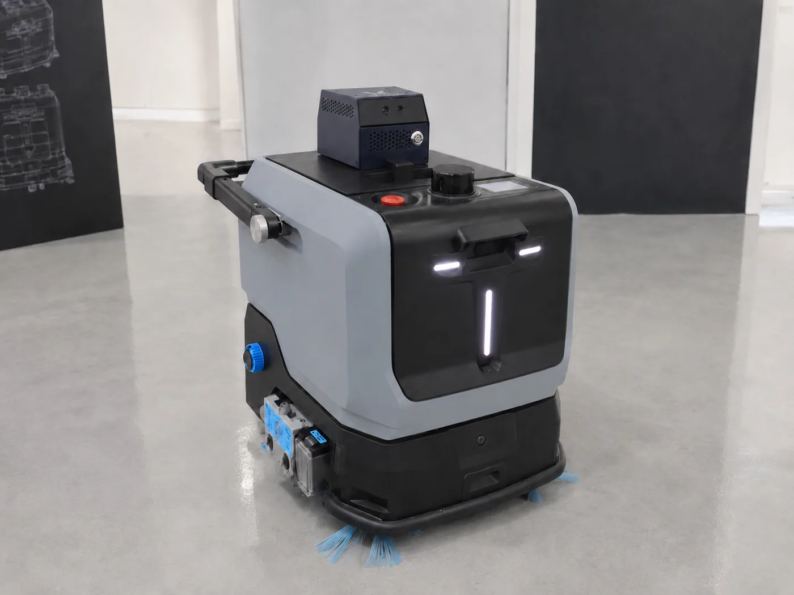

Signal × Navy · 색 정련
현재 시그널 #3FC4F0은 명도·채도가 둘 다 높아, 딥 네이비 스테이지 위에서 "네온 온 다크"로 튀어 다소 촌스럽게 읽힙니다. 라벨 텍스트·구조는 그대로 두고 아이브로우 색만 바꿔 비교합니다 — 톤을 낮추는 두 방향(B·C)과, 시안을 큰 텍스트에서 빼고 작은 마크로만 남기는 방향(D)입니다. 이건 다크 면 적용에 한정할 수도, 시그널 토큰 자체를 조정할 수도 있습니다.

순찰과 청소를 하나의 플랫폼에서 수행하는 시설관리 통합 로봇.
자세히 보기순찰과 청소를 하나의 플랫폼에서 수행하는 시설관리 통합 로봇.
자세히 보기순찰과 청소를 하나의 플랫폼에서 수행하는 시설관리 통합 로봇.
자세히 보기순찰과 청소를 하나의 플랫폼에서 수행하는 시설관리 통합 로봇.
자세히 보기회색 블루 · Gray-blue
채도를 더 낙춰 그레이로 당깁니다. 왼쪽(E)이 가장 블루, 오른쪽(G)이 가장 그레이 — 그레이로 갈수록 차분하지만 '시그널'로서의 힘은 약해집니다(거의 보조 텍스트처럼 읽힘).
순찰과 청소를 하나의 플랫폼에서 수행하는 시설관리 통합 로봇.
자세히 보기순찰과 청소를 하나의 플랫폼에서 수행하는 시설관리 통합 로봇.
자세히 보기순찰과 청소를 하나의 플랫폼에서 수행하는 시설관리 통합 로봇.
자세히 보기